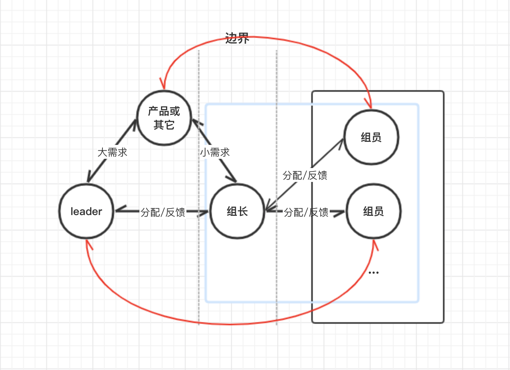
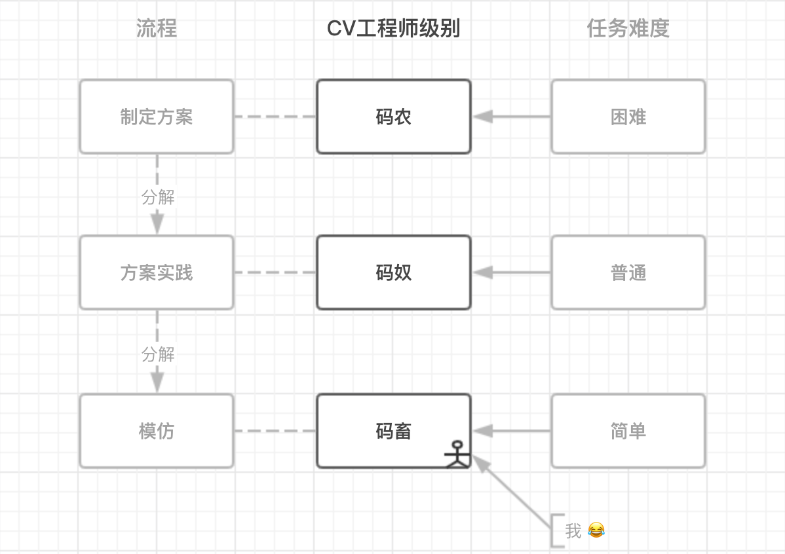

<!DOCTYPE html><html class="theme-next mist" lang="zh-Hans"><head><meta name="generator" content="Hexo 3.9.0"><meta charset="UTF-8"><meta name="baidu-site-verification" content="dil57BBbBc"><meta http-equiv="X-UA-Compatible" content="IE=edge"><meta name="viewport" content="width=device-width,initial-scale=1,maximum-scale=1"><meta name="theme-color" content="#222"><link rel="manifest" href="/manifest.json"><link rel="stylesheet" media="all" href="/lib/Han/dist/han.min.css?v=3.3"><meta http-equiv="Cache-Control" content="no-transform"><meta http-equiv="Cache-Control" content="no-siteapp"><meta name="google-site-verification" content="YH32omENY7b_BdEuIWv46jSBK-0Vyw_dWbJTGNBblT0"><link href="https://cdn.jsdelivr.net/gh/tonsky/FiraCode@1.206/distr/fira_code.css" rel="stylesheet" type="text/css"><link href="https://cdnjs.cloudflare.com/ajax/libs/font-awesome/4.7.0/css/font-awesome.min.css" rel="stylesheet" type="text/css"><link href="/css/main.css?v=5.1.4" rel="stylesheet" type="text/css"><link rel="apple-touch-icon" sizes="180x180" href="/images/favicon.ico?v=5.1.4"><link rel="icon" type="image/png" sizes="32x32" href="/images/favicon.ico?v=5.1.4"><link rel="icon" type="image/png" sizes="16x16" href="/images/favicon.ico?v=5.1.4"><link rel="icon" type="image/png" sizes="16x16" href="/images/favicon.ico?v=5.1.4"><link rel="icon" type="image/png" sizes="16x16" href="/images/favicon.ico?v=5.1.4"><link rel="icon" type="image/png" sizes="16x16" href="/images/favicon.ico?v=5.1.4"><meta name="keywords" content="前端架构,"><meta name="description" content="架构与边界前言总算把《架构整洁之道》看完了，这种看还是走马观花的看法。这本书和前端没有什么直接的关联，看完之后，你甚至会想，前端有架构这个概念么？其实，从系统架构角度看，前端所做的工作只是可替代的实现细节而已。即使如此，也不妨碍从中学到有用的知识，毕竟道理都是相通的。架构概述步入正题，如果只是一个简单的系统，倒是不用在乎架构设计。但系统越来越庞大，越来越复杂的时候，糟糕的设计只会使得投入与产出不成"><meta name="keywords" content="前端架构"><meta property="og:type" content="article"><meta property="og:title" content="架构与协作"><meta property="og:url" content="https://yexiaochen.github.io/架构与边界/index.html"><meta property="og:site_name" content="贪空"><meta property="og:description" content="架构与边界前言总算把《架构整洁之道》看完了，这种看还是走马观花的看法。这本书和前端没有什么直接的关联，看完之后，你甚至会想，前端有架构这个概念么？其实，从系统架构角度看，前端所做的工作只是可替代的实现细节而已。即使如此，也不妨碍从中学到有用的知识，毕竟道理都是相通的。架构概述步入正题，如果只是一个简单的系统，倒是不用在乎架构设计。但系统越来越庞大，越来越复杂的时候，糟糕的设计只会使得投入与产出不成"><meta property="og:locale" content="zh-Hans"><meta property="og:image" content="https://yexiaochen.github.io/images/Architecture.png"><meta property="og:image" content="https://yexiaochen.github.io/images/team.png"><meta property="og:updated_time" content="2019-12-09T14:49:17.505Z"><meta name="twitter:card" content="summary"><meta name="twitter:title" content="架构与协作"><meta name="twitter:description" content="架构与边界前言总算把《架构整洁之道》看完了，这种看还是走马观花的看法。这本书和前端没有什么直接的关联，看完之后，你甚至会想，前端有架构这个概念么？其实，从系统架构角度看，前端所做的工作只是可替代的实现细节而已。即使如此，也不妨碍从中学到有用的知识，毕竟道理都是相通的。架构概述步入正题，如果只是一个简单的系统，倒是不用在乎架构设计。但系统越来越庞大，越来越复杂的时候，糟糕的设计只会使得投入与产出不成"><meta name="twitter:image" content="https://yexiaochen.github.io/images/Architecture.png"><script type="text/javascript" id="hexo.configurations">var NexT=window.NexT||{},CONFIG={root:"/",scheme:"Mist",version:"5.1.4",sidebar:{position:"left",display:"hide",offset:12,b2t:!1,scrollpercent:!1,onmobile:!0},fancybox:!1,tabs:!0,motion:{enable:!1,async:!1,transition:{post_block:"fadeIn",post_header:"slideDownIn",post_body:"slideDownIn",coll_header:"slideLeftIn",sidebar:"slideUpIn"}},duoshuo:{userId:"0",author:"博主"},algolia:{applicationID:"",apiKey:"",indexName:"",hits:{per_page:10},labels:{input_placeholder:"Search for Posts",hits_empty:"We didn't find any results for the search: ${query}",hits_stats:"${hits} results found in ${time} ms"}}}</script><link rel="canonical" href="https://yexiaochen.github.io/架构与边界/"><title>架构与协作 | 贪空</title><script type="text/javascript">var _hmt=_hmt||[];!function(){var e=document.createElement("script");e.src="https://hm.baidu.com/hm.js?7503c6e413a2a7205320ec2396c811d0";var t=document.getElementsByTagName("script")[0];t.parentNode.insertBefore(e,t)}()</script></head><body itemscope itemtype="http://schema.org/WebPage" lang="zh-Hans"><div class="container sidebar-position-left page-post-detail"><div class="headband"></div><header id="header" class="header" itemscope itemtype="http://schema.org/WPHeader"><div class="header-inner"><div class="site-brand-wrapper"><div class="site-meta"><div class="custom-logo-site-title"><a href="/" class="brand" rel="start"><span class="logo-line-before"><i></i></span> <span class="site-title">贪空</span> <span class="logo-line-after"><i></i></span></a></div><h1 class="site-subtitle" itemprop="description">贪空 Blog</h1></div><div class="site-nav-toggle"><button><span class="btn-bar"></span> <span class="btn-bar"></span> <span class="btn-bar"></span></button></div></div><nav class="site-nav"><ul id="menu" class="menu"><li class="menu-item menu-item-home"><a href="/" rel="section"><i class="menu-item-icon fa fa-fw fa-home"></i><br>首页</a></li><li class="menu-item menu-item-tags"><a href="/tags/" rel="section"><i class="menu-item-icon fa fa-fw fa-tags"></i><br>标签</a></li><li class="menu-item menu-item-categories"><a href="/categories/" rel="section"><i class="menu-item-icon fa fa-fw fa-th"></i><br>分类</a></li><li class="menu-item menu-item-archives"><a href="/archives/" rel="section"><i class="menu-item-icon fa fa-fw fa-archive"></i><br>归档</a></li></ul></nav></div></header><main id="main" class="main"><div class="main-inner"><div class="content-wrap"><div id="content" class="content"><div id="posts" class="posts-expand"><article class="post post-type-normal" itemscope itemtype="http://schema.org/Article"><div class="post-block"><link itemprop="mainEntityOfPage" href="https://yexiaochen.github.io/架构与边界/"><span hidden itemprop="author" itemscope itemtype="http://schema.org/Person"><meta itemprop="name" content="贪空"><meta itemprop="description" content><meta itemprop="image" content="/images/avatar.jpeg"></span><span hidden itemprop="publisher" itemscope itemtype="http://schema.org/Organization"><meta itemprop="name" content="贪空"></span><header class="post-header"><h2 class="post-title" itemprop="name headline">架构与协作</h2><div class="post-meta"><span class="post-time"><span class="post-meta-item-icon"><i class="fa fa-calendar-o"></i> </span><span class="post-meta-item-text">发表于</span> <time title="创建于" itemprop="dateCreated datePublished" datetime="2019-12-07T23:50:00+08:00">2019-12-07 </time><span class="post-meta-divider">|</span> <span class="post-meta-item-icon"><i class="fa fa-calendar-check-o"></i> </span><span class="post-meta-item-text">更新于&#58;</span> <time title="更新于" itemprop="dateModified" datetime="2019-12-09T22:49:17+08:00">2019-12-09 </time></span><span class="post-category"><span class="post-meta-divider">|</span> <span class="post-meta-item-icon"><i class="fa fa-folder-o"></i> </span><span class="post-meta-item-text">分类于</span> <span itemprop="about" itemscope itemtype="http://schema.org/Thing"><a href="/categories/这个想法不一定对/" itemprop="url" rel="index"><span itemprop="name">这个想法不一定对</span></a></span></span><div class="post-wordcount"><span class="post-meta-item-icon"><i class="fa fa-file-word-o"></i> </span><span class="post-meta-item-text">字数统计&#58;</span> <span title="字数统计">1,630 字 </span><span class="post-meta-divider">|</span> <span class="post-meta-item-icon"><i class="fa fa-clock-o"></i> </span><span class="post-meta-item-text">阅读时长 &asymp;</span> <span title="阅读时长">5 分钟</span></div></div></header><div class="post-body han-init-context" itemprop="articleBody"><h1 id="架构与边界"><a href="#架构与边界" class="headerlink" title="架构与边界"></a>架构与边界</h1><h2 id="前言"><a href="#前言" class="headerlink" title="前言"></a>前言</h2><p>总算把《架构整洁之道》看完了，这种看还是走马观花的看法。这本书和前端没有什么直接的关联，看完之后，你甚至会想，前端有架构这个概念么？其实，从系统架构角度看，前端所做的工作只是可替代的实现细节而已。即使如此，也不妨碍从中学到有用的知识，毕竟道理都是相通的。</p><h2 id="架构概述"><a href="#架构概述" class="headerlink" title="架构概述"></a>架构概述</h2><p>步入正题，如果只是一个简单的系统，倒是不用在乎架构设计。但系统越来越庞大，越来越复杂的时候，糟糕的设计只会使得投入与产出不成正比，甚至于入不敷出。而罪魁祸首就是人们经常用来自欺欺人的一句话，「技术债后期还上，产品先上线！」。但是，需求永远是做不完的，更何况，短期内技术升级是看不到任何产出的。</p><blockquote><p>稳即是快！</p></blockquote><p>稳，是要求软件架构的质量有保证，要求每一个实施的技术方案都经过调研和论证，而不能因业务的压力匆匆上线。虽然，「software」，soft 指的是软件的灵活性，但这和系统的「稳」并不冲突，而恰恰因为稳才使得系统更具灵活性。</p><blockquote><p>那么，回过头再看一看，导致生产效率持续降低的这个锅到底谁来背？</p></blockquote><p>系统的价值可以通过行为和架构两个维度来衡量。行为价值，是指将需求文档变为实际的代码，为使用者创造价值，同时修复任何 Bug。架构价值，体现在让功能实现起来更容易、修改起来更简单、扩展起来更轻松。我们将这两个维度对照着紧急/重要矩阵：</p><ul><li>系统行为：紧急</li><li>系统架构：重要</li></ul><p>再按优先级排序：</p><ol><li>重要且紧急</li><li>重要不紧急</li><li>不重要但紧急</li><li>不重要且不紧急</li></ol><p>系统架构占据第一、第二位，系统行为占据第一、第三位。而实际开发过程中，在业务部门和研发人员的“共同努力下”，错误地将第三优先级的事情当成第一优先级去做。</p><p>业务部门意识不到系统架构的重要性很正常，但是身为研发人员呢？这是研发人员的职责所在，有必要去抗争来自其它部门的压力，阐述问题的重要性。</p><blockquote><p>“这是你的问题！”</p><p>“不用说了，听我的！”</p><p>“这个事情不需要讨论。”</p></blockquote><p>研发人员出力不讨好，费神又费力，到底为了什么？</p><blockquote><p>软件架构的终结目标是，用最小的人力成本来满足构建和维护该系统的需求。</p></blockquote><h2 id="边界"><a href="#边界" class="headerlink" title="边界"></a>边界</h2><p>开发中的最佳实践在团队协作中同样适用，管理团队也需要像架构师一样去协调团队及个体之间的关系。在开发过程中，沟通成本其实还是挺高的，这时候就可以学习学习系统中的数据是如何在组件间传递的。</p><blockquote><p>架构师所追求的目标是最大限度地降低构建和维护一个系统所需的人力资源。那么我们就需要了解一个系统最消耗人力资源的是什么？答案是系统中存在的耦合 —— 尤其是那些过早做出的、不成熟的决策所导致的耦合。</p></blockquote><p>以前端团队为背景：</p><p>「尤其是那些过早做出的、不成熟的决策所导致的耦合。」这些很好类比，比如高层拍屁股拍出的想法，产品不成熟的想法等，这些决策直接下发到代码的实现者，然后依据反馈不断纠正。</p><blockquote><p>边界线也应该沿着系统的变更轴来画。也就是说，位于边界线两侧的组件应该以不同原因、不同速率变化着。</p></blockquote><p>根据不同的职能划分不同的区域，左边偏业务，右边偏技术，尴尬的是处在边界上的这位仁兄。如果组长的话语权不够，那就成为谦卑对象的存在了。</p><p></p><p>先忽略红线，根据单一职责，做好自己的本职工作，有输入有输出，依赖关系简单，沟通效率高。组长和组员的关系就如同展示器和视图的关系，组长需要将需求整理成最终的任务分配下去，工作内容包括参与需求评审，技术方案的制定，项目排期等，组员只需要执行任务并反馈即可。</p><p>再看一看红线部分，边界本来就是应对频繁变更的需求而建立的防火墙，此时红线绕过边界干预边界的另一头，面对这么多的输入，组员也会蒙圈，这任务谁在负责，我该向谁反馈，这个人提出的问题那个人确认了么，等等一系列的问题。</p><p>所以，私底下对于频繁变更需求并干预边界右侧的产品，我们称之为傻叉某某。对于经常拍屁股拍出想法并干预右侧的 leader，我们也称之为傻叉某某。</p><h2 id="协作"><a href="#协作" class="headerlink" title="协作"></a>协作</h2><p>要想稳，就得保证任务高效有质量地完成。任务派发给了蓝框里的研发人员，研发人员之间的指派总不能靠抓阄来决定。</p><blockquote><p>A：“这个开发难度为S级（困难）的任务就交给你了，我先走一步。”</p><p>B：“。。。”</p><p>某一天，</p><p>C: “之前的 A 水平有限，这代码已经没法维护了，重做吧。”</p><p>B：“。。。”</p><p>C：“抓紧点，我们要赶超对手，没错，就你一个人。”</p><p>B：“。。。”</p></blockquote><p>从以上对话，我们来思考几个问题。如果 B 的水平和 A 一样，最终的结果是项目还会因为无法维护而重做。如果 B 能够胜任，由于时间的问题，最终的结果可能比第一种情况好一些。如果 B 能够胜任，老板为了加快进度，又投入一个人，最终的结果就是个谜，因为这要取决于 B 的水平。</p><p>不过现在是一个团队了，团队就应该发挥团队应有的优势。</p><p></p><p>所以，职责要明确，搭配要妥当。</p></div><div><div><div style="text-align:center;color:#555;font-size:18px">------------- The End -------------</div></div></div><div><ul class="post-copyright"><li class="post-copyright-author"><strong>本文作者：</strong> 贪空</li><li class="post-copyright-link"><strong>本文链接：</strong> <a href="https://yexiaochen.github.io/架构与边界/" title="架构与协作">https://yexiaochen.github.io/架构与边界/</a></li><li class="post-copyright-license"><strong>版权声明： </strong>本博客所有文章除特别声明外，均采用 <a href="https://creativecommons.org/licenses/by-nc-sa/3.0/" rel="external nofollow noopener noreferrer" target="_blank">CC BY-NC-SA 3.0</a> 许可协议。转载请注明出处！</li></ul></div><footer class="post-footer"><div class="post-tags"><a href="/tags/前端架构/" rel="tag"><i class="fa fa-tag"></i> 前端架构</a></div><div class="post-nav"><div class="post-nav-next post-nav-item"><a href="/所谓的微前端/" rel="next" title="所谓的微前端"><i class="fa fa-chevron-left"></i> 所谓的微前端</a></div><span class="post-nav-divider"></span><div class="post-nav-prev post-nav-item"><a href="/chrome使用姿势（extensions-flags）/" rel="prev" title="chrome使用姿势（extensions+flags）">chrome使用姿势（extensions+flags） <i class="fa fa-chevron-right"></i></a></div></div></footer></div></article><div class="post-spread"></div></div></div><div class="comments" id="comments"><div onclick="showGitment()" id="gitment-display-button">显示评论</div><div id="gitment-container" style="display:none"></div></div></div><div class="sidebar-toggle"><div class="sidebar-toggle-line-wrap"><span class="sidebar-toggle-line sidebar-toggle-line-first"></span> <span class="sidebar-toggle-line sidebar-toggle-line-middle"></span> <span class="sidebar-toggle-line sidebar-toggle-line-last"></span></div></div><aside id="sidebar" class="sidebar"><div id="sidebar-dimmer"></div><div class="sidebar-inner"><ul class="sidebar-nav motion-element"><li class="sidebar-nav-toc sidebar-nav-active" data-target="post-toc-wrap">文章目录</li><li class="sidebar-nav-overview" data-target="site-overview-wrap">站点概览</li></ul><section class="site-overview-wrap sidebar-panel"><div class="site-overview"><div class="site-author motion-element" itemprop="author" itemscope itemtype="http://schema.org/Person"><p class="site-author-name" itemprop="name">贪空</p><p class="site-description motion-element" itemprop="description"></p></div><nav class="site-state motion-element"><div class="site-state-item site-state-posts"><a href="/archives/"><span class="site-state-item-count">68</span> <span class="site-state-item-name">日志</span></a></div><div class="site-state-item site-state-categories"><a href="/categories/index.html"><span class="site-state-item-count">11</span> <span class="site-state-item-name">分类</span></a></div><div class="site-state-item site-state-tags"><a href="/tags/index.html"><span class="site-state-item-count">118</span> <span class="site-state-item-name">标签</span></a></div></nav><div class="links-of-author motion-element"><span class="links-of-author-item"><a href="mailto:2277438436@qq.com" target="_blank" title="E-Mail" rel="external nofollow noopener noreferrer"><i class="fa fa-fw fa-envelope"></i>E-Mail</a></span></div></div></section><section class="post-toc-wrap motion-element sidebar-panel sidebar-panel-active"><div class="post-toc"><div class="post-toc-content"><ol class="nav"><li class="nav-item nav-level-1"><a class="nav-link" href="#架构与边界"><span class="nav-number">1.</span> <span class="nav-text">架构与边界</span></a><ol class="nav-child"><li class="nav-item nav-level-2"><a class="nav-link" href="#前言"><span class="nav-number">1.1.</span> <span class="nav-text">前言</span></a></li><li class="nav-item nav-level-2"><a class="nav-link" href="#架构概述"><span class="nav-number">1.2.</span> <span class="nav-text">架构概述</span></a></li><li class="nav-item nav-level-2"><a class="nav-link" href="#边界"><span class="nav-number">1.3.</span> <span class="nav-text">边界</span></a></li><li class="nav-item nav-level-2"><a class="nav-link" href="#协作"><span class="nav-number">1.4.</span> <span class="nav-text">协作</span></a></li></ol></li></ol></div></div></section></div></aside></div></main><footer id="footer" class="footer"><div class="footer-inner"><div class="copyright">&copy; 2018 &mdash; <span itemprop="copyrightYear">2023</span> <span class="with-love"><i class="fa fa-user"></i> </span><span class="author" itemprop="copyrightHolder">贪空</span></div></div></footer><div class="back-to-top"><i class="fa fa-arrow-up"></i></div></div><script type="text/javascript">"[object Function]"!==Object.prototype.toString.call(window.Promise)&&(window.Promise=null)</script><script type="text/javascript" src="https://cdnjs.cloudflare.com/ajax/libs/jquery/3.3.1/jquery.min.js"></script><script type="text/javascript" src="https://cdnjs.cloudflare.com/ajax/libs/fastclick/1.0.6/fastclick.min.js"></script><script type="text/javascript" src="https://cdnjs.cloudflare.com/ajax/libs/jquery_lazyload/1.9.7/jquery.lazyload.min.js"></script><script type="text/javascript" src="https://cdnjs.cloudflare.com/ajax/libs/velocity/1.2.1/velocity.min.js"></script><script type="text/javascript" src="https://cdnjs.cloudflare.com/ajax/libs/velocity/1.2.1/velocity.ui.min.js"></script><script type="text/javascript" src="/js/src/utils.js?v=5.1.4"></script><script type="text/javascript" src="/js/src/motion.js?v=5.1.4"></script><script type="text/javascript" src="/js/src/scrollspy.js?v=5.1.4"></script><script type="text/javascript" src="/js/src/post-details.js?v=5.1.4"></script><script type="text/javascript" src="/js/src/bootstrap.js?v=5.1.4"></script><link rel="stylesheet" href="https://cdn.jsdelivr.net/npm/gitalk@1/dist/gitalk.css"><script src="https://cdn.jsdelivr.net/npm/gitalk@1/dist/gitalk.min.js"></script><style>a.gitment-editor-footer-tip{display:none}.gitment-container.gitment-footer-container{display:none}</style><script type="text/javascript">function renderGitment(){new Gitalk({id:window.decodeURIComponent(window.location.pathname),owner:"yexiaochen",repo:"blogComments",distractionFreeMode:!1,admin:["yexiaochen"],clientSecret:"5df7f4f6edb8a65fef2d0cf7cb6fa40b04a44525",clientID:"fad749b2b67be41f767a"}).render("gitment-container")}function showGitment(){document.getElementById("gitment-display-button").style.display="none",document.getElementById("gitment-container").style.display="block",renderGitment()}</script><script>!function(){var t=document.createElement("script"),e=window.location.protocol.split(":")[0];t.src="https"===e?"https://zz.bdstatic.com/linksubmit/push.js":"http://push.zhanzhang.baidu.com/push.js";var s=document.getElementsByTagName("script")[0];s.parentNode.insertBefore(t,s)}()</script></body></html>